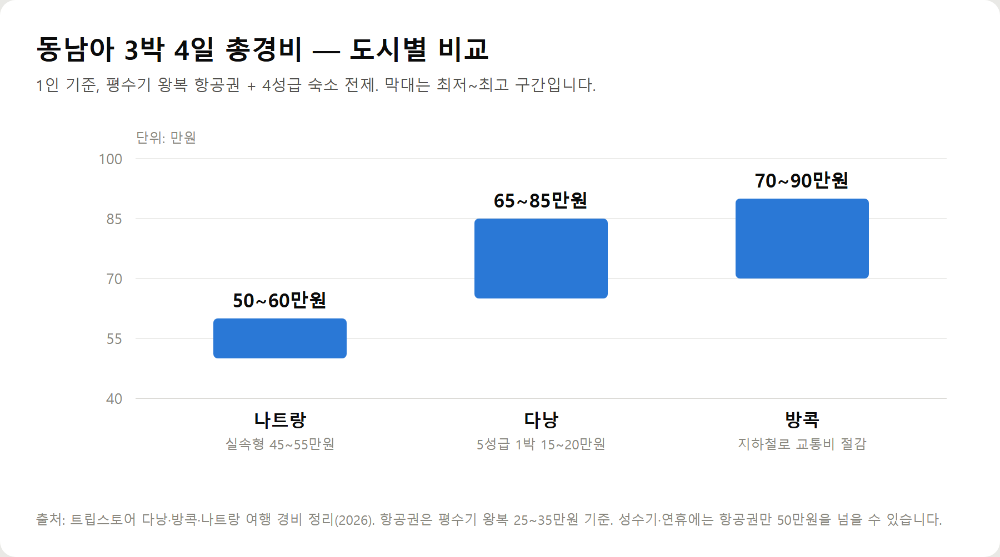
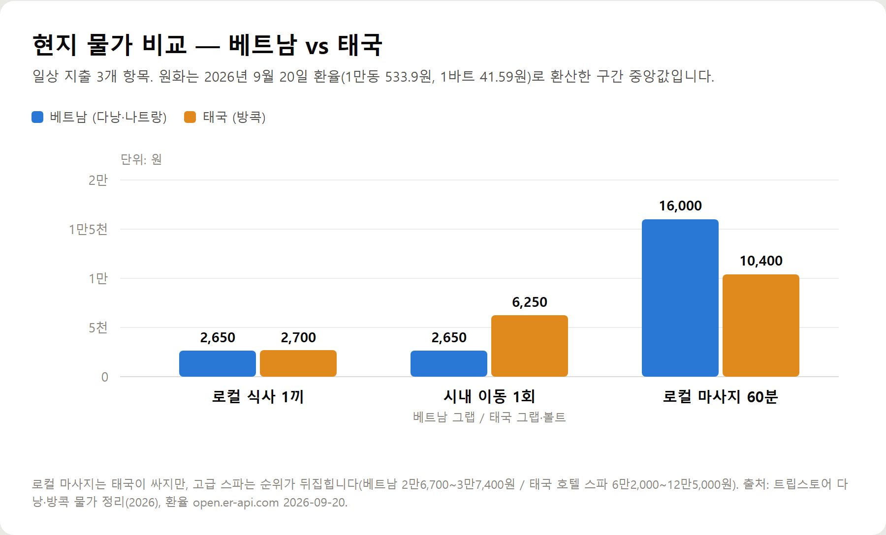
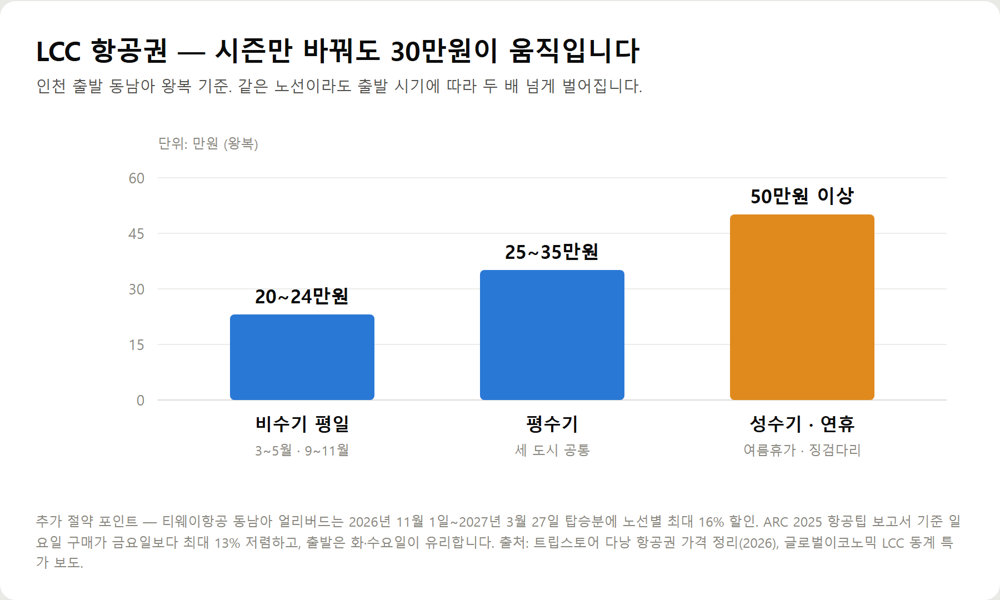
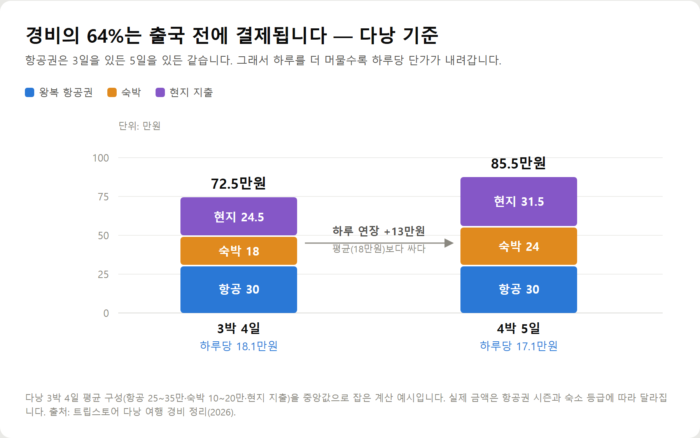

<meta charset="utf-8">
<title>동남아 가성비 여행지 TOP 3 — 3박4일 실제 경비 총정리 — 나의 투자 그리고 행복한 여행</title>
<meta name="description" content="고물가 시대 동남아 가성비 여행지 3곳의 실제 물가와 3박4일 예산, LCC 항공권 특가 잡는 법을 2026년 9월 환율 기준으로 정리했습니다.">
<meta name="viewport" content="width=device-width, initial-scale=1">
<link rel="canonical" href="https://danielmoon82.github.io/moon/posts/sea-budget-2026-09-20.html">
<link rel="preconnect" href="https://fonts.googleapis.com">
<link rel="preconnect" href="https://fonts.gstatic.com" crossorigin>
<link rel="stylesheet" href="https://fonts.googleapis.com/css2?family=Hahmlet:wght@400;600;800&family=IBM+Plex+Mono:wght@400;500&family=IBM+Plex+Sans+KR:wght@300;400;500;600&display=swap">

<style>
  :root{
    --paper:#F2EEE6;--surface:#FAF8F3;--surface-2:#E7E1D5;
    --ink:#191510;--ink-2:#4A4235;--ink-3:#7D7364;
    --line:#D6CEBF;--line-soft:#E4DDD0;--accent:#B06A15;--accent-bright:#C2761A;
    --up:#E5484D;--down:#3B82F6;
    --f-display:"Hahmlet",'Nanum Myeongjo',"Apple SD Gothic Neo",serif;
    --f-body:"IBM Plex Sans KR","Apple SD Gothic Neo","Malgun Gothic",sans-serif;
    --f-mono:"IBM Plex Mono","SFMono-Regular",Consolas,monospace;
    --pad:clamp(20px,5vw,64px);
  }
  @media (prefers-color-scheme:dark){
    :root:not([data-theme="light"]){
      --paper:#0B1120;--surface:#121A2C;--surface-2:#1A2439;
      --ink:#E9EEF7;--ink-2:#A9B5C9;--ink-3:#72809A;
      --line:#26314A;--line-soft:#1D2739;--accent:#E8A33D;--accent-bright:#F0B45C;
    }
  }
  *{box-sizing:border-box;}
  body{margin:0;background:var(--paper);color:var(--ink);font-family:var(--f-body);
    font-weight:300;font-size:1rem;line-height:1.75;-webkit-font-smoothing:antialiased;}
  a{color:inherit;}
  img{max-width:100%;height:auto;}
  .wrap{max-width:760px;margin:0 auto;padding-inline:var(--pad);}
  .nav{position:sticky;top:0;z-index:20;background:color-mix(in srgb,var(--paper) 88%,transparent);
    backdrop-filter:saturate(180%) blur(12px);border-bottom:1px solid var(--line);}
  .nav-in{display:flex;align-items:center;justify-content:space-between;height:58px;}
  .brand{font-family:var(--f-display);font-weight:600;font-size:1rem;letter-spacing:-.02em;text-decoration:none;}
  .back{font-family:var(--f-mono);font-size:.72rem;color:var(--ink-3);text-decoration:none;}
  .article{padding-block:clamp(40px,7vw,72px) clamp(56px,9vw,96px);}
  .eyebrow{font-family:var(--f-mono);font-size:.68rem;letter-spacing:.16em;text-transform:uppercase;
    color:var(--accent);margin:0 0 14px;}
  h1{font-family:var(--f-display);font-weight:800;font-size:clamp(1.6rem,4.4vw,2.3rem);
    line-height:1.3;letter-spacing:-.03em;margin:0 0 16px;}
  .byline{font-family:var(--f-mono);font-size:.72rem;color:var(--ink-3);
    padding-bottom:24px;border-bottom:1px solid var(--line);margin-bottom:32px;}
  h2{font-family:var(--f-display);font-weight:600;font-size:1.25rem;letter-spacing:-.02em;margin:42px 0 14px;}
  h3{font-family:var(--f-display);font-weight:600;font-size:1.05rem;letter-spacing:-.02em;
    margin:30px 0 10px;padding-top:14px;border-top:1px solid var(--line-soft);}
  h3 .code{font-family:var(--f-mono);font-size:.7rem;font-weight:400;color:var(--ink-3);margin-left:6px;}
  p{margin:0 0 18px;color:var(--ink-2);}
  ul.checks{margin:0 0 18px;padding-left:20px;color:var(--ink-2);}
  ul.checks li{margin-bottom:8px;font-size:.94rem;}
  table{width:100%;border-collapse:collapse;font-size:.88rem;margin-bottom:8px;}
  th{font-family:var(--f-mono);font-size:.66rem;letter-spacing:.06em;text-transform:uppercase;
    color:var(--ink-3);text-align:right;padding:8px 6px;border-bottom:1px solid var(--line);}
  th:first-child{text-align:left;}
  td{padding:10px 6px;border-bottom:1px solid var(--line-soft);color:var(--ink-2);}
  td.num{font-family:var(--f-mono);text-align:right;font-variant-numeric:tabular-nums;}
  td.up{color:var(--up);} td.down{color:var(--down);}
  .scroll{overflow-x:auto;}
  figure{margin:22px 0;}
  figure img{display:block;border-radius:3px;background:var(--surface-2);}
  figcaption{margin-top:8px;font-family:var(--f-mono);font-size:.68rem;color:var(--ink-3);text-align:center;}
  .note{margin-top:34px;padding:16px 18px;border-left:3px solid var(--accent);
    background:var(--surface);border-radius:0 3px 3px 0;}
  .note p{margin:0;font-size:.85rem;color:var(--ink-3);}
  .foot{border-top:1px solid var(--line);background:var(--surface);padding-block:30px 38px;}
  .foot p{margin:0;font-size:.8rem;color:var(--ink-3);}
</style>

<nav class="nav">
  <div class="wrap nav-in">
    <a class="brand" href="../index.html">나의 투자 그리고 행복한 여행</a>
    <a class="back" href="../index.html#stocks">← 시황으로</a>
  </div>
</nav>

<main class="wrap article">
  <p class="eyebrow">Market</p>
  <h1>물가 싼 동남아 3곳 데이터 정리 — 다낭·방콕·나트랑 항목별 물가와 예산표</h1>
  <p class="byline">여행 · 2026-09-20 기준</p>

  <p>한 줄 요약: 환율 1,386원·물가 3.1% 상승 국면에서 3박 4일 1인 총경비는 나트랑 50~60만원, 다낭 65~85만원, 방콕 70~90만원 선입니다.</p>
  <p>아래는 세 도시의 항목별 물가와 예산 구성을 표로만 정리한 데이터 페이지입니다. 원화는 2026년 9월 20일 환율로 직접 환산했습니다.</p>
  <p><b>이 포스팅은 네이버 쇼핑 커넥트 활동의 일환으로, 판매 발생 시 수수료를 제공받습니다.</b></p>
  <p><b>이 포스팅은 쿠팡 파트너스 활동의 일환으로, 이에 따른 일정액의 수수료를 제공받습니다.</b></p>
  <h2>기준 환율</h2>
  <ul class="checks">
    <li>1 USD = 1,386.96원</li>
    <li>10,000 VND = 533.9원</li>
    <li>1 THB = 41.59원</li>
    <li>출처: open.er-api.com, 2026-09-20 00:02 UTC</li>
  </ul>
  <p>참고 지표 — 원/달러는 2026-09-11 약 1,339원에서 1,380원대로 상승. 2026년 8월 소비자물가 상승률 3.1%(7월 2.8%).</p>
  <h2>도시별 3박 4일 총경비 (1인, 평수기 기준)</h2>
  <figure><figcaption>동남아 3박 4일 총경비 도시별 비교 — 나트랑 50~60만원, 다낭 65~85만원, 방콕 70~90만원 (1인 기준, 2026년 9월)</figcaption></figure>
  <div style="overflow-x:auto"><table border="1" cellpadding="6" style="border-collapse:collapse;width:100%;font-size:14px;line-height:1.5"><thead><tr><th style="background:#f3f5f8">도시</th><th style="background:#f3f5f8">총경비</th><th style="background:#f3f5f8">항공권</th><th style="background:#f3f5f8">숙박 3박</th><th style="background:#f3f5f8">현지 지출</th></tr></thead><tbody><tr><td>나트랑</td><td>50~60만원</td><td>25~35만원</td><td>12~18만원</td><td>18~27만원</td></tr><tr><td>다낭</td><td>65~85만원</td><td>25~35만원</td><td>15~24만원</td><td>24~30만원</td></tr><tr><td>방콕</td><td>70~90만원</td><td>25~35만원</td><td>15~24만원</td><td>24~33만원</td></tr></tbody></table></div>
  <h2>항목별 현지 물가</h2>
  <figure><figcaption>베트남·태국 일상 물가 비교 — 로컬 식사 1끼, 시내 이동 1회, 로컬 마사지 60분 (단위: 원, 2026년 9월 20일 환율 기준)</figcaption></figure>
  <div style="overflow-x:auto"><table border="1" cellpadding="6" style="border-collapse:collapse;width:100%;font-size:14px;line-height:1.5"><thead><tr><th style="background:#f3f5f8">항목</th><th style="background:#f3f5f8">베트남 (다낭·나트랑)</th><th style="background:#f3f5f8">태국 (방콕)</th></tr></thead><tbody><tr><td>로컬 식사</td><td>40,000~60,000동 · 2,100~3,200원</td><td>50~80바트 · 2,100~3,300원</td></tr><tr><td>야시장 간식</td><td>30,000~50,000동 · 1,600~2,700원</td><td>—</td></tr><tr><td>관광지 식당</td><td>150,000~300,000동 · 8,000~16,000원</td><td>—</td></tr><tr><td>커피</td><td>59,000동 · 3,100원</td><td>—</td></tr><tr><td>마사지 60분 (로컬)</td><td>300,000동 · 16,000원</td><td>200~300바트 · 8,300~12,500원</td></tr><tr><td>마사지 60분 (고급)</td><td>500,000~700,000동 · 26,700~37,400원</td><td>1,500~3,000바트 · 62,000~125,000원</td></tr><tr><td>택시·그랩</td><td>40,000~60,000동 · 2,100~3,200원</td><td>100~200바트 · 4,200~8,300원</td></tr><tr><td>지하철 1회</td><td>없음</td><td>16~60바트 · 700~2,500원</td></tr><tr><td>지하철 1일권</td><td>없음</td><td>150바트 · 6,200원</td></tr><tr><td>대표 입장료</td><td>바나힐 900,000동 · 48,000원</td><td>왕궁 500바트 · 20,800원</td></tr><tr><td>1일 예산 (가성비)</td><td>50,000~70,000원 (숙박 제외)</td><td>1,150~1,700바트 · 47,800~70,700원</td></tr></tbody></table></div>
  <h2>항공권 가격대</h2>
  <figure><figcaption>LCC 항공권 시즌별 왕복 가격대 — 비수기 평일 20~24만원, 평수기 25~35만원, 성수기·연휴 50만원 이상 (인천 출발 동남아 기준)</figcaption></figure>
  <div style="overflow-x:auto"><table border="1" cellpadding="6" style="border-collapse:collapse;width:100%;font-size:14px;line-height:1.5"><thead><tr><th style="background:#f3f5f8">구분</th><th style="background:#f3f5f8">왕복 가격</th><th style="background:#f3f5f8">비고</th></tr></thead><tbody><tr><td>비수기 평일</td><td>20만원대 초중반</td><td>다낭 기준, 3~5월·9~11월</td></tr><tr><td>평수기</td><td>25~35만원</td><td>세 도시 공통</td></tr><tr><td>성수기·연휴</td><td>50만원 이상</td><td>여름휴가·징검다리 연휴</td></tr></tbody></table></div>
  <ul class="checks">
    <li>티웨이항공 동남아 얼리버드 — 탑승기간 2026-11-01~2027-03-27, 노선별 최대 16% 할인</li>
    <li>제주항공 국제선 찜 특가 — 편도 최저 일본 6만8천원대 ~ 사이판 15만원대</li>
    <li>ARC 2025 보고서 — 일요일 구매가 금요일보다 최대 13% 저렴, 화·수 출발 권장</li>
    <li>인천-나트랑 직항 비행시간 약 5시간 45분</li>
  </ul>
  <h2>고정비 · 변동비 분해</h2>
  <p>다낭 3박 4일 75만원 기준.</p>
  <figure><figcaption>다낭 기준 경비 구성 분해 — 3박4일 72.5만원(하루당 18.1만원) vs 4박5일 85.5만원(하루당 17.1만원), 하루 연장 한계비용 13만원</figcaption></figure>
  <ul class="checks">
    <li>고정비(항공 30만 + 숙박 18만) = 48만원, 전체의 64%</li>
    <li>변동비(현지 지출) = 27만원, 36%</li>
    <li>3박4일 하루당 약 18만원 / 4박5일 하루당 약 17만원</li>
    <li>하루 연장 한계비용 약 13만원 — 평균(18만원)보다 낮음</li>
    <li>환율 5% 상승 시 추가 부담 약 1만3천원 (변동비에만 적용)</li>
  </ul>
  <h2>체류 일수별 총경비 (다낭 기준)</h2>
  <div style="overflow-x:auto"><table border="1" cellpadding="6" style="border-collapse:collapse;width:100%;font-size:14px;line-height:1.5"><thead><tr><th style="background:#f3f5f8">일정</th><th style="background:#f3f5f8">총경비</th><th style="background:#f3f5f8">하루당</th></tr></thead><tbody><tr><td>3박 4일</td><td>약 72.5만원</td><td>약 18.1만원</td></tr><tr><td>4박 5일</td><td>약 85.5만원</td><td>약 17.1만원</td></tr></tbody></table></div>
  <h2>여행 준비물</h2>
  <ul class="checks">
    <li>멀티 어댑터 — 태국 A·B·C형, 베트남 A·C형</li>
    <li>보조배터리 — 기내 반입은 100Wh 이하</li>
    <li>수하물 추적 태그 — 경유편 이용 시</li>
    <li>기내용 캐리어 — LCC 위탁 수하물 편도 2~4만원 절감</li>
  </ul>
  <p><a href="https://link.coupang.com/a/g0p2f42pNI" target="_blank" rel="sponsored nofollow noopener">여행용 멀티 어댑터</a></p>
  <p><a href="https://link.coupang.com/a/g0p1DwB7Rc" target="_blank" rel="sponsored nofollow noopener">수하물 추적 태그</a></p>
  <p><a href="https://brandconnect.naver.com/affiliates/996273855578848?channelProductNo=10218785304" target="_blank" rel="sponsored noopener">상품 보러 가기 — 셀본 56cm(20인치) 기내용 캐리어 74,900원</a></p>
  <p><a href="https://brandconnect.naver.com/affiliates/996274714153920?channelProductNo=10352481064" target="_blank" rel="sponsored noopener">상품 보러 가기 — 포켓쉴 20000mAh 기내반입 보조배터리 37,800원</a></p>
  <p><a href="https://brandconnect.naver.com/affiliates/996274757563328?channelProductNo=10481750557" target="_blank" rel="sponsored noopener">상품 보러 가기 — 톰디어 편광 선글라스 SG2 54,800원</a></p>
  <p>※ 환율과 현지 물가는 매일 바뀌고 항공권은 좌석마다 값이 다릅니다. 이 글의 숫자는 2026년 9월 기준 참고값이니 예약 직전에 실제 가격을 다시 확인해 주세요.</p>
  <p>※ 환율은 2026년 9월 20일 open.er-api.com 기준(1만동 533.9원, 1바트 41.59원, 1달러 1,386.96원)이며 원화 환산은 이 환율로 직접 계산했습니다. 현지 물가·항공권 가격은 트립스토어 다낭·방콕·나트랑 경비 정리(2026), 소비자물가 3.1%는 2026년 8월 통계, 항공권 특가 정보는 티웨이·제주항공 프로모션 보도와 ARC 2025 항공팁 보고서를 참고했습니다.</p>
</main>

<footer class="foot">
  <div class="wrap"><p>나의 투자 그리고 행복한 여행 · 투자 판단의 참고 자료일 뿐, 매수·매도를 권유하지 않습니다.</p></div>
</footer>
